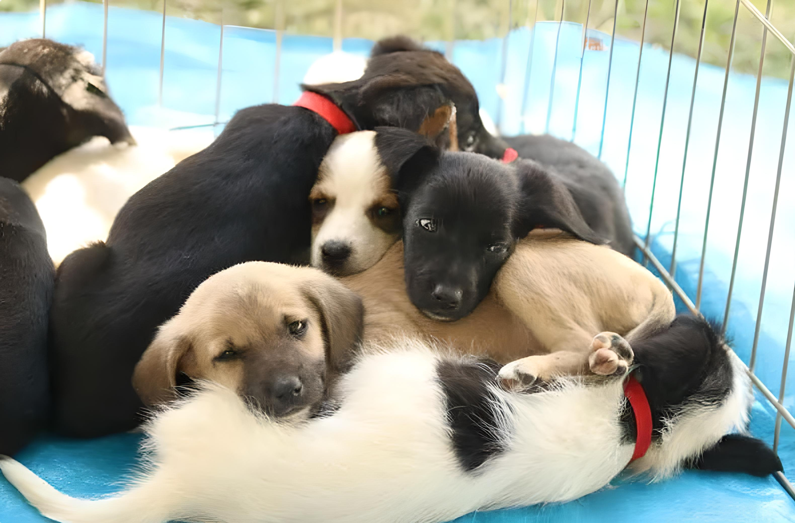
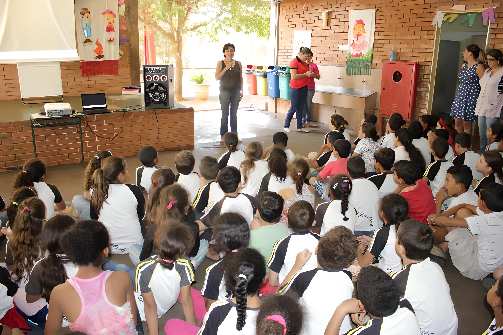

Atividades da ONG
Realizamos diversas atividades para melhorar a qualidade de vida dos animais, tais como:
- - Resgate e reabilitação de animais abandonados ou vítimas de maus-tratos
- - Castração gratuita de animais para controle populacional
- - Realização de feiras de adoção para encontrar lares amorosos para animais abandonados
- - Fornecimento de abrigo, água e alimento para animais de rua
Campanhas de adoção
Realizamos regularmente campanhas de adoção, onde animais resgatados são colocados para adoção em feiras ou divulgados em nossas redes sociais. Todos os animais são castrados, vacinados e vermifugados antes de serem entregues aos novos tutores.
Doações de alimentos
Aceitamos doações de ração e distribuímos para pessoas que cuidam de animais de rua ou que não têm condições financeiras para comprar ração para seus animais de estimação. Também utilizamos a ração doada para alimentar os animais abrigados em nossa ONG.

Cursos e palestras
Oferecemos cursos e palestras gratuitas para a comunidade sobre cuidados com animais de estimação, posse responsável e prevenção de maus-tratos. Essas ações educativas são essenciais para conscientizar a população sobre a importância de tratar os animais com respeito e responsabilidade.
